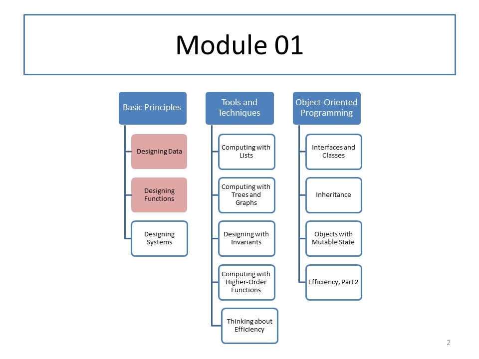

CS 5010: Module 01
Module Overview
This week we will introduce the Function Design Recipe, which is a technique that will help you to achieve the goal of this course: writing beautiful programs.
The Function Design Recipe has six steps:
- Data Design
- Contract and Purpose Statement
- Examples and Tests
- Design Strategy
- Function Definition
- Program Review
We will spend most of the week (Lessons 1.2-1.5) on Step 1, Data Design. We will write down a recipe for doing a data design, and we will learn about templates, which allow us to process data by simply filling in the blanks.
Course Map
Readings
Read the Prologue and Part I from our textbook, which will introduce you to programming in Racket's Basic Student Language, using fixed-size data. Note that the book talks about the Basic Student Language, but the assignments will actually use the Intermediate Student Language, which contains the Basic Student Language as a subset.
Resources
- The example programs for each week will be found in the Examples section of this website. Please take note of the License, which sets out the terms under which you may use these files.
- PDFs of the weekly lessons will be found in the Pdfs section of of this website.
- The entire website is available at github as https://github.com/mwand/cs5010f17. We recommend that you clone it and pull the changes every week so you will always have a complete set of example programs.
Lessons
- Lesson 1.1 The Function Design Recipe
- Lesson 1.2 The Kinds of Data
- Guided Practice 1.1
- Lesson 1.3 The Data Design Recipe
- Lesson 1.4 Using a Template
- Guided Practice 1.2
Activities
Please do the following activities:
- If you have not completed the pre-semester checklist, please do so now.
- Do the rest of the exercises in Lesson 0.4: An Introduction to Racket.
Problem Set